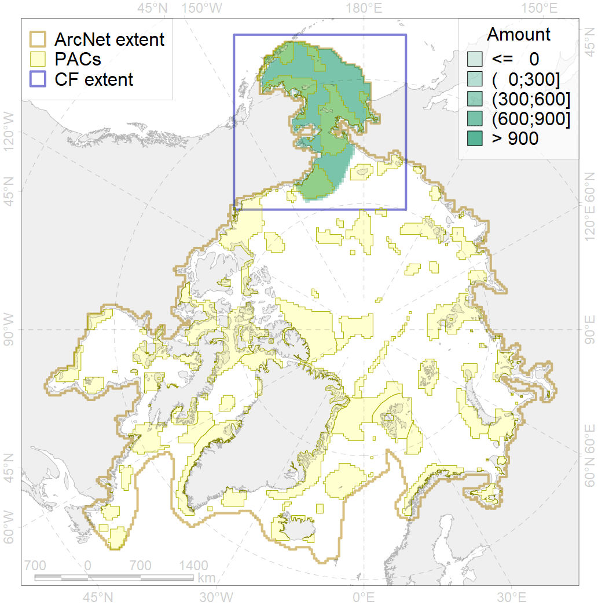
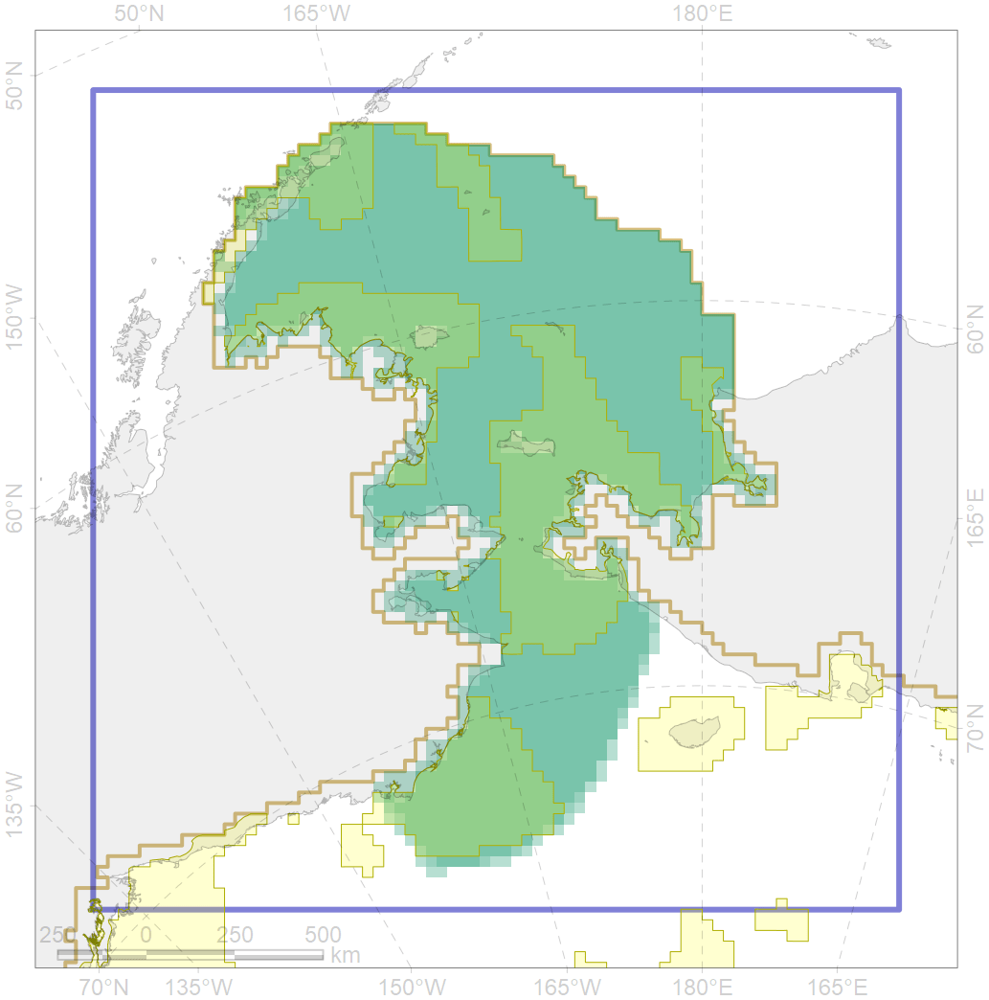

4050

| CF ID | 4050 |
| CF Name | Range of the Pollock (Theragra chalcogramma) |
| Time Period | 1950-2010s |
| Source(s) | Popova in Reshetnikov, 2013; Mecklenburg et al., 2018 |
| Seasonality | January-December |
| Depth Horizon | 0-1280 |
| Methodology | Compiled from literature sources based on field observations |
| Author Name | N. Chernova |
| Notes | |
| Conservation Target Set in the Scenario | 0.06 |
| Conservation Target Achieved in the Scenario | 0.410 (Scenario: 684.1%) |
| PAC ID | Proportion in the PAC | Contribution to ArcNet Target Achievement | PAC’s Contribution to the Achieved Target |
|---|---|---|---|
| 1 | 3.9% | 61.8% | 9.0% |
| 2 | 3.1% | 42.9% | 6.3% |
| 3 | 7.9% | 120.1% | 17.6% |
| 4 | 1.7% | 22.6% | 3.3% |
| 5 | 16.4% | 250.0% | 36.5% |
| 6 | 0.1% | 1.3% | 0.2% |
| 60 | 8.7% | 130.4% | 19.1% |
| inner | 41.8% | 629.2% | 92.0% |
| outer | 58.2% | 54.9% | 8.0% |